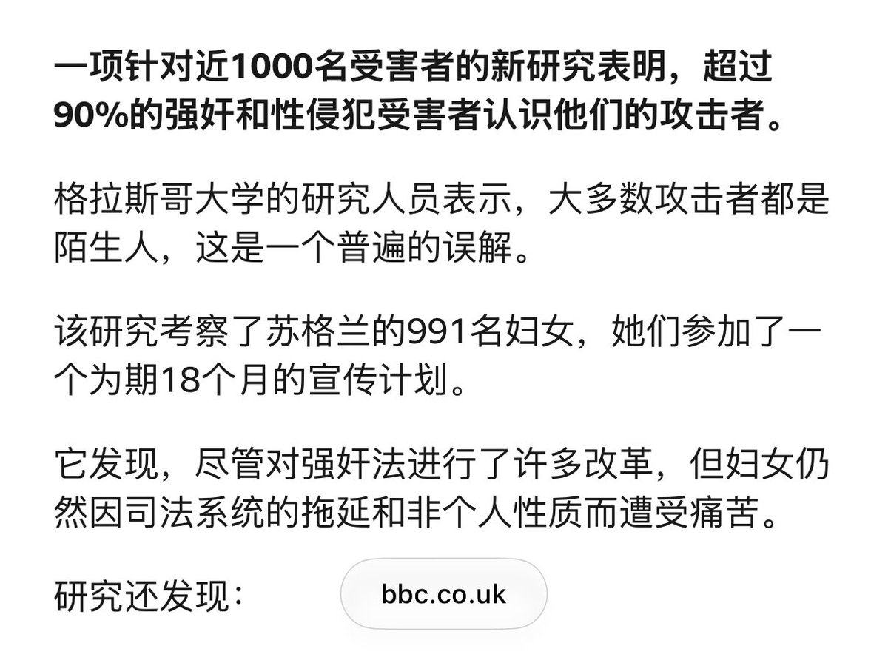

错误❌我上学期刚给学生讲过，「只有女性能被强奸」是父权制压迫女性留下的历史糟粕。这一历史规范对强奸的定义完全基于女性贞操和怀孕能力，而非个人对身体的自决权，预设的是「洁净的」女性身体作为潜在父系家庭私有财产的专属性，这也就是为什么强奸的拉丁语rapere原意指盗窃。因此，不够体面的女性、乃至已被父系家庭接纳为财产的女性，往往就会被排除在强奸法律的保护之外，如婚内强奸至今仍然在中国不被认定为强奸，而女性性工作者自古以来都不会被视为强奸的可能受害者。
另一点关键误解在于，80%的性侵/强奸都发生在熟人（尤其是上下级等）之间，往往更关乎当事人之间的权力关系差异，即便是体力相近或者性少数之间也会有强奸发生。陌生人临时起意出现的「激情强奸」往往发挥的作用反而是通过夸大其辞的恐慌话语，遮蔽强奸实际发生的场景和环境。
另一点关键误解在于，80%的性侵/强奸都发生在熟人（尤其是上下级等）之间，往往更关乎当事人之间的权力关系差异，即便是体力相近或者性少数之间也会有强奸发生。陌生人临时起意出现的「激情强奸」往往发挥的作用反而是通过夸大其辞的恐慌话语，遮蔽强奸实际发生的场景和环境。
